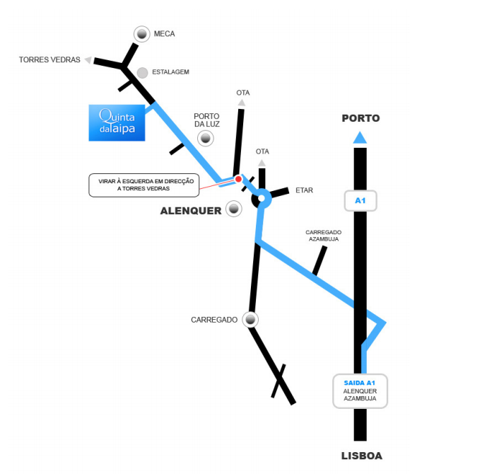

Se precisas de alojamento para a noite do casamento, existem alguns sítios bem perto da Quinta da Taipa:
A Quinta da Taipa localiza-se em Porto da Luz, Alenquer, a cerca de 30min de Lisboa.

GPS: N 39º3'57" | W 9º1'58"
Faz o download do croqui da Quinta da Taipa.
Por favor confirma a tua presença, naquele que já é considerado o evento ano, até ao dia 21 de Abril de 2013.
Se tiveres alguma restrição alimentar, se fores vegetariano, não te esqueças de nos dizer.
Tens um telefone espertalhoco, então junta-te a nós no Google Plus.
Quando confirmares a tua presença através do formulário, envia-nos o teu mail @gmail para te adicionarmos ao evento.
Depois no dia festa activas o modo festa e vão ser fotos a saltar, por todos os lados. Nunca te divestiste tanto assim!!!
Mais informações sobre o modo Party mode do Google Plus.
Voltar